Station observations
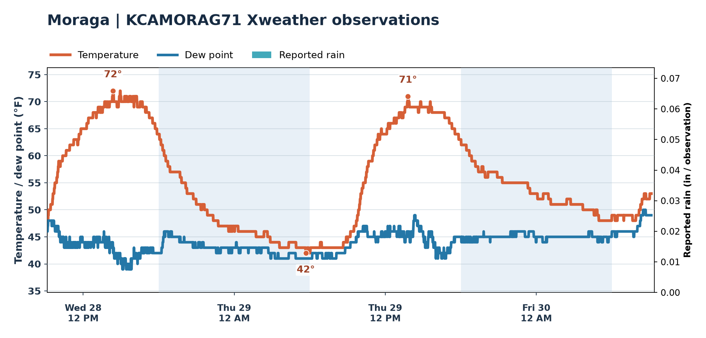
Local conditions · Pacific storms · Forecast skill
KCAMORAG71 · Moraga, CA
Observed temperature and dew point.

Daily temperatures and model guidance.
Moraga daily outlook
Loading daily forecast…
Temperatures blend models using recent verified skill and local bias adjustments. Rainfall uses multiple models; icons consider cloud cover, agreement and rain duration. Forecast weighting is provisional while the verification archive grows. Tap “Model range” for daily details.
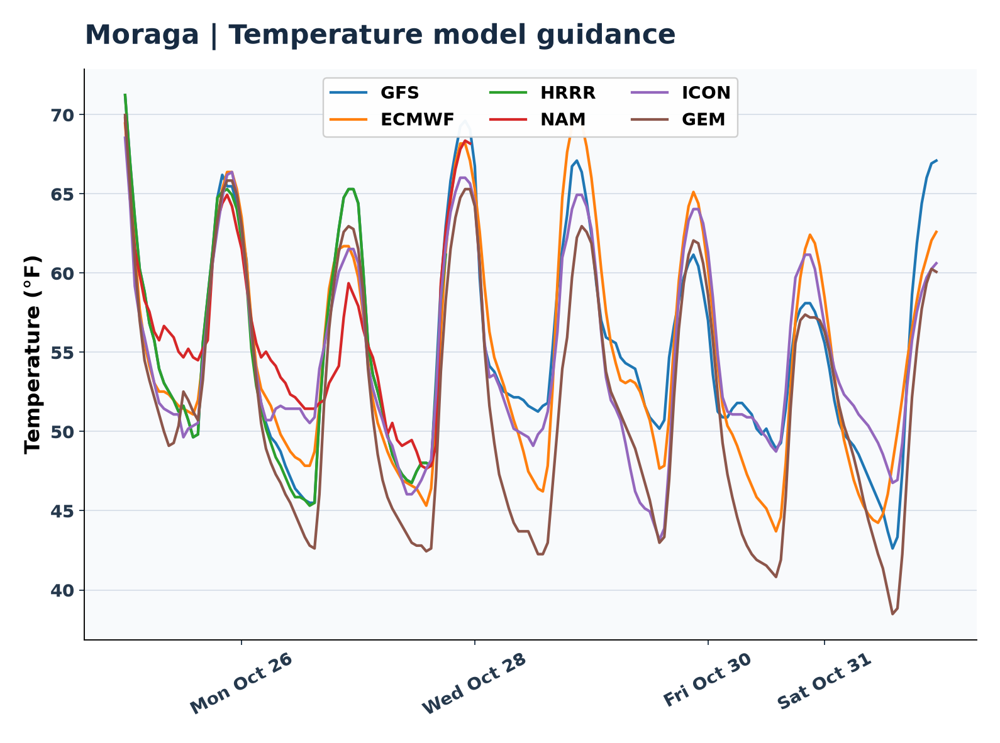
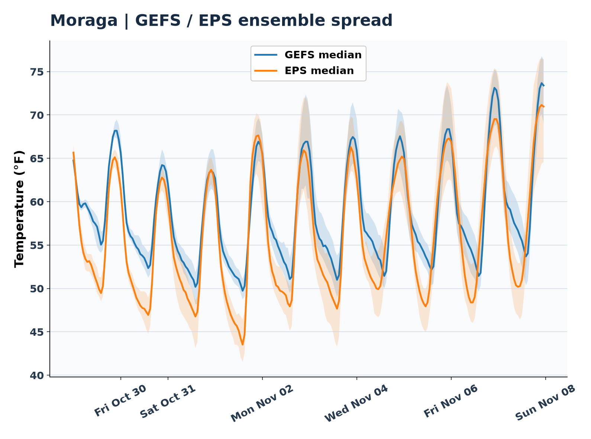
Track marine air moving inland.
96-hour coastal-to-inland temperature and dew point.
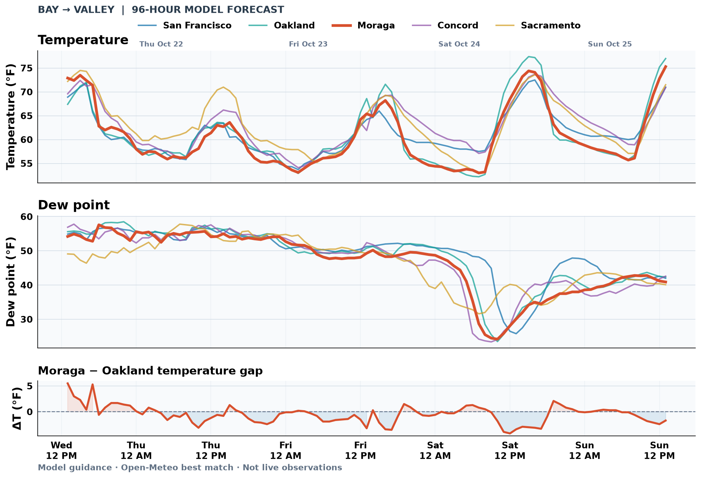
Awaiting first successful model chart run.')">Model forecastCoastal pressure relative to Sacramento.

Arcata minus SFO pressure · model analysis and forecast.
 Model analysis + forecast
Model analysis + forecastModeled boundary-layer height (not measured inversion depth).

Bay Area clouds and approaching Pacific storms.
Clouds by day; enhanced imagery at night.
Cloud-top temperatures, day and night.
Incoming Pacific storms.
Storm clouds and frontal systems.
Midlevel moisture, troughs and dry intrusions.
Broader western U.S. view including all of Arizona and Southwest moisture.
Source: NOAA GOES-West. Images may be delayed; open NOAA loops for timestamps.
Model rainfall forecasts for Moraga.
Daily model rainfall comparison.
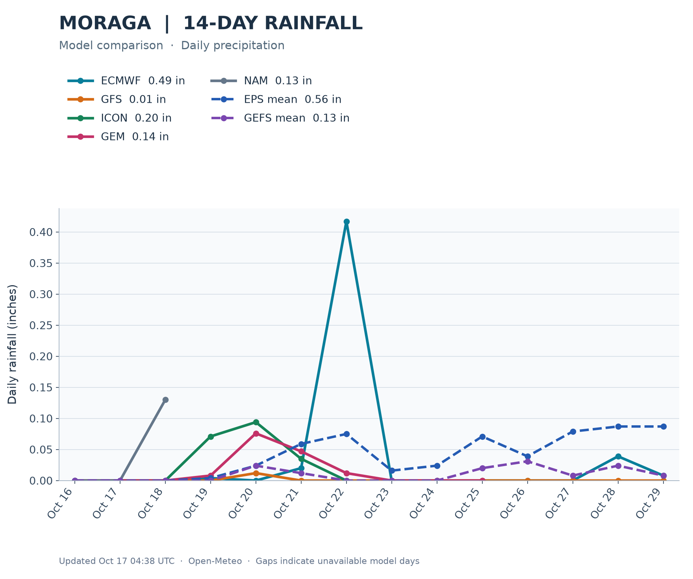
Long-range temperature ranges and rain chances.
Awaiting verified ensemble guidance…
Official probabilities for above-, near-, or below-normal temperature and precipitation.


CPC maps describe odds of temperature and precipitation relative to climatology, not exact daily highs or rainfall totals. Check the issue and valid dates printed on each NOAA map.
Hourly model accuracy, with separate daily high and low verification as eligible records become available.
Loading verified hourly model accuracy…
See current forecast comparison data and rainfall forecast data.
Forecasts versus observed weather.
Loading yesterday’s forecasts and observations…
Tracking issued high and low forecasts against completed KCAMORAG71 observation days. Results appear once eligible comparisons are available.
Loading verified accuracy…
Observed monthly temperatures and rainfall.
Loading station climate records…
Jet stream, upper-air pattern and moisture.
NOAA Ocean Prediction Center · eastern Pacific analysis
 Map unavailable right now — open the NOAA analysis.
Map unavailable right now — open the NOAA analysis.ECMWF versus GFS: 500 hPa geopotential heights and 850 hPa temperatures over Moraga. Weekday labels use Pacific time.

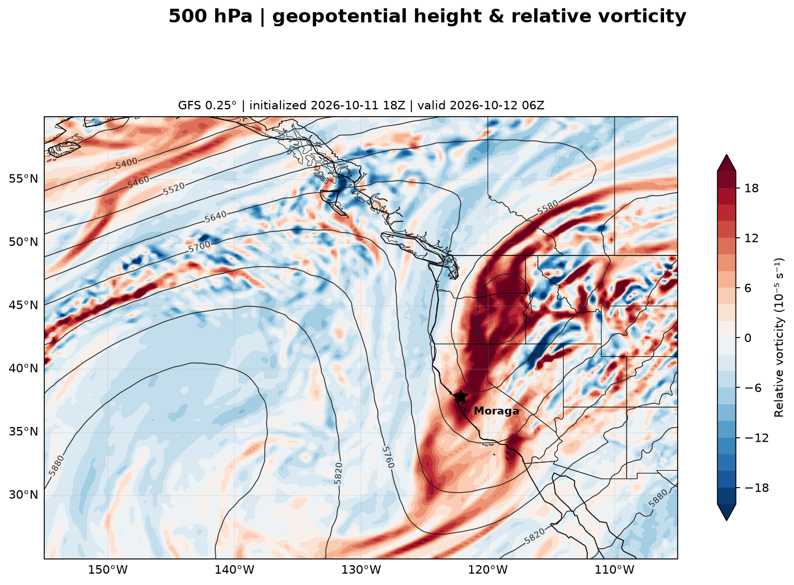
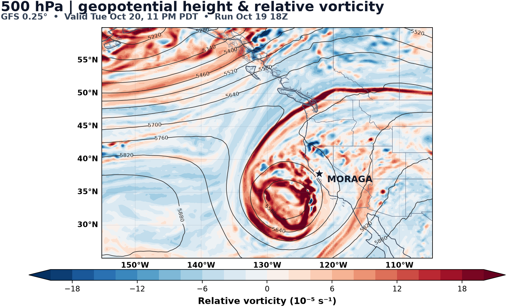
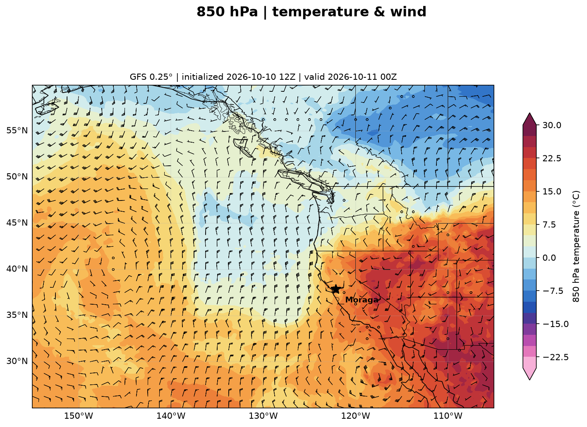
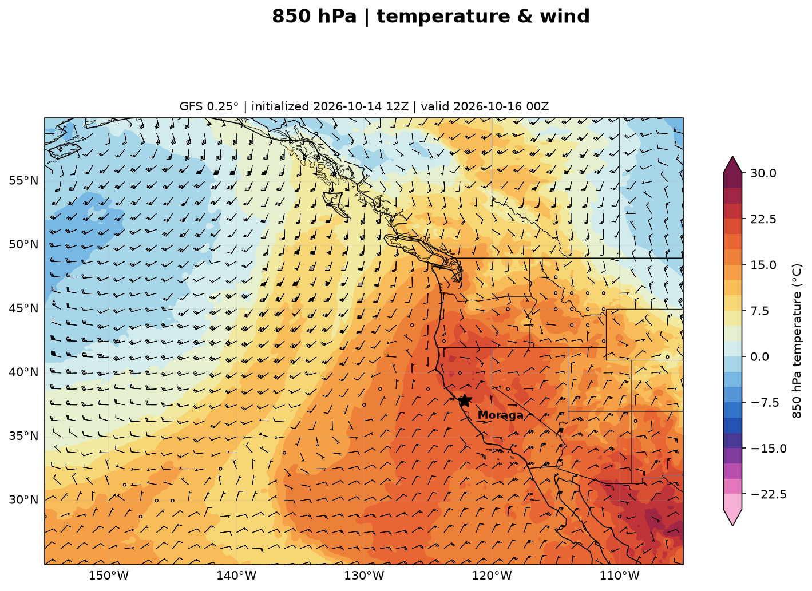
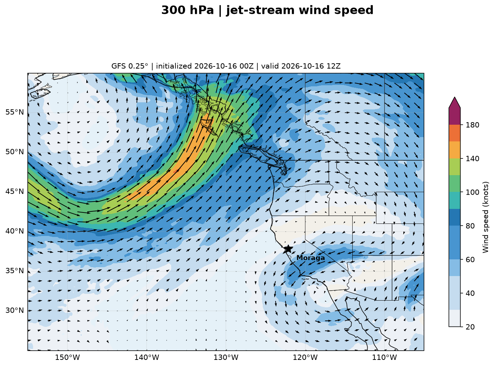
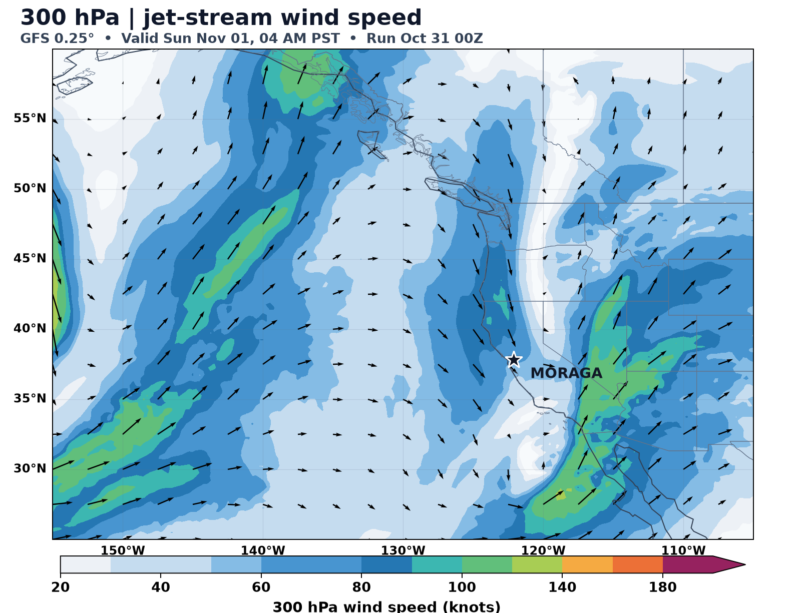
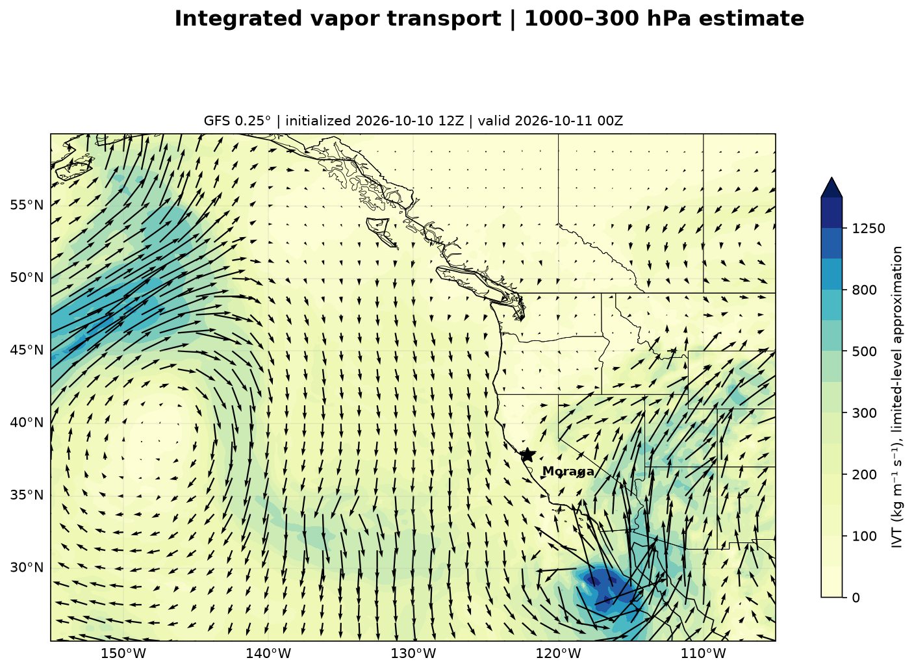
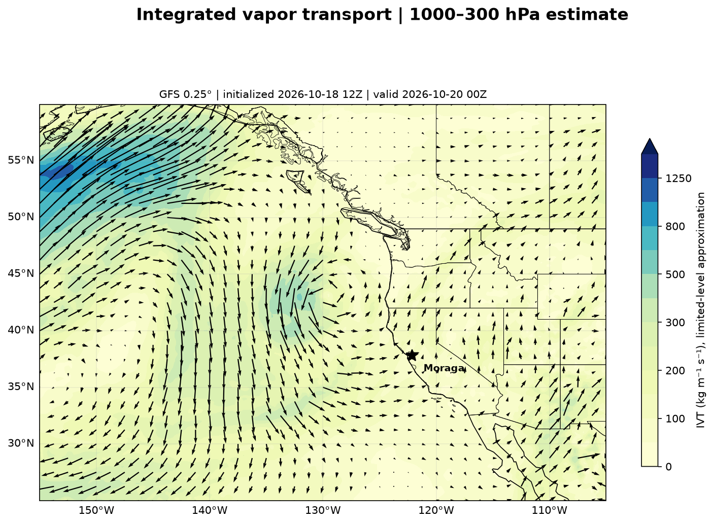